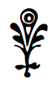
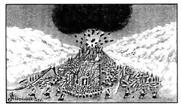

II. BÖLÜM
KAYIP KITA
Mu’nun, insanoğlunun anayurdunun yıkımının hikâyesi gerçekten de tuhaf. Bu hikâye sayesinde Güney Denizi Adaları’nda yaşayan beyazların gizemi çözülebilir ve Pasifik’in ortasında bir uygarlığın nasıl geliştiği ve sonra nasıl yalnızca bir gece içinde tamamen yok olduğu öğrenilebilir. Yıllar önce bilim insanları Pasifik Okyanusu’nun ortasında Mu gibi devasa bir kıtanın varlığına şüpheyle yaklaşırlardı. Fakat o günden bu yana böyle bir kıtanın gerçekten de bir zamanlar var olduğuna dair kayıtlar ortaya çıktı ve karşılaştırmalar yapıldı. Bu konuda çeşitli kanıtlar mevcut.
Öncelikle, ilk bölümde de anlattığım gibi Hindistan’da bir tapınakta bulduğum ve deneyimli rahip dostumun yardımıyla deşifre ettiğim kutsal tabletler var. Bu tabletler bana Mu hakkındaki ilk ipuçlarını sağladı ve dünya çapında bir arayışa başlamama neden oldu. Tabletler, Naacaller tarafından ya Burma’daya da anayurtta yazılmıştı ve Naacallerin aslında Pasifik’in merkezindeki ülkeleri olan anayurttan geldiklerini söylüyordu. Bunun yanı sıra insanın yaratılışı ve bu ülkede ortaya çıkışının hikâyesini anlatıyorlardı. Maya, Mısır ve Hindistan’da daha ileri tarihlerde tutulmuş kayıtların tanımlayıp anlattığı bu Mu ülkesinin yıkımı, yerkabuğunun depremlerle parçalanıp alevler içindeki dipsiz bir uçuruma düşmesi şeklinde. Daha sonraysa Pasifik’in suları ülkenin üzerini kaplıyor ve bir zamanlar kudretli bir medeniyetin bulunduğu yerde tek kalan şey sular oluyor.
İkinci olarak, ona antik tapınak kayıtlarını okuyan, Ayhodia’daki Rishi Tapınağı Başrahibi Narana’nın dikte etmesiyle, bir bilge ve tarihçi olan Valmiki tarafından yazılan Hindu destanı Ramayana gibi klasikler de dahil olmak üzere, başka antik elyazmaları tarafından da Mu’nun varlığı onaylanıyor. Bir bölümde Valmiki, Naacallerden “Doğdukları yer olan doğudan Burma’ya geldiler” diyerek bahsediyor, yani Pasifik Okyanusu’nun yönünden. Kutsal tabletlerin ve Valmiki’nin hikâyelerini doğrulayan başka bir belge ise şimdi British Museum’da bulunan Troano Elyazması. Bu, Yucatan’da yazılmış antik bir Maya kitabı. “Mu Ülkesi”nden bahsederken Hindistan, Burma ve Mısır’da karşımıza çıkan sembolleri kullanıyor. Başka bir kaynak ise Troano Elyazması ile yaklaşık olarak aynı zamana ait bir Maya kitabı olan Codex Cortesianus. Ayrıca Lhasa Belgeleri; Mısır, Yunanistan, Orta Amerika ve Meksika’da yüzlercesi daha ve batı eyaletlerimizdeki uçurum yazıları da var.
Üçüncü olarak, konumları ve üzerlerini süsleyen semboller sayesinde insanoğlunun anayurdu olan kayıp kıta Mu’dan bahseden harabeler söz konusu. Bazı Güney Denizi Adaları’nda, özellikle de Paskalya, Mangaia, Tongatabu, Panape ve Ladrone (Manana) Adaları’nda, bizi Mu’nun zamanına götüren eski, taştan tapınak harabeleri ve diğer yıkıntılar bulunuyor. Uxmal, Yucatan’da yıkık bir tapınaktaki kitabelerde “Batı Toprakları, geldiğimiz yer”in hatırası saklanıyor. Ayrıca Mexico City’nin güneybatısındaki etkileyici bir Meksika piramidi, kitabesinde anlattığı kadarıyla aynı “Batı Toprakları”nın yıkımını temsil eden bir anıt.
Dördüncü olarak Mısır, Burma, Hindistan, Japonya, Çin, Güney Denizi Adaları, Orta ve Güney Amerika ve bazı Kuzey Amerika yerli kabilelerinde ve diğer başka antik medeniyet merkezlerinde keşfedilen eski sembol ve geleneklerdeki evrensellik söz konusu. Bu sembol ve gelenekler öyle büyük bir benzerlik gösteriyorlar ki tek bir kaynaktan, Mu’dan geldikleri şüphesiz. O hâlde artık bu bilgilerin ışığında Mu’nun yıkımının hikâyesinin izini sürebiliriz.
Öğrendiğimiz kadarıyla bu kıta, Hawaii’nin kuzeyinden güneye uzanan devasa, iniş çıkışlı topraklardan oluşuyordu. Paskalya Adası ve Fiji’ler arasında bir çizgi güney sınırını belirliyordu. Doğudan batıya 5000 mil, kuzeyden güneye 3000 mil genişliğindeydi. Kıta, birbirlerinden dar boğaz veya kanallarla ayrılmış üç kara parçasından oluşuyordu.
I, IV ve V. bölümlerde gösterilen kayıtlara dayanarak, bu kıtayı bir zamanlar olduğu gibi tasvir etmeye çalışacağım:
Eskiden, çok eskiden, uzak zamanlarda -binlerce yıl önce, yine de tarihsel olarak adlandırdığımız çağların kıyısında- Pasifik Okyanusu’nun ortasında, şimdi “yalnızca su ve gökyüzü bulunan”22 yerde büyük bir kıta ve bugün Güney Denizi Adaları olarak bilinen küçük ada grupları vardı.
Bu, “göz alabildiğine uzanan çayırları”3 olan “güzel”4, tropik bir bölgeydi. Vadi ve çayırlar, zengin otlaklar ve sürülmüş tarlalarla kaplanmış, “alçak tepelikler”5 ise gür, tropik bitki örtüsünün gölgesindeydi. Bu dünyevi cennetin topraklarında hiçbir dağ veya sıradağ yoktu, çünkü dağlar daha toprağın derinliklerinden yükselmemişti.
Bu büyük ve zengin topraklar, dolambaçlı yataklarıyla ağaçlı tepelerin etrafından ve bereketli çayırların içinden geçerek akıl almaz kavisler ve kıvrımlar çizen birçok geniş ve sakin ırmak ve dereyle ayrılıyor ve sulanıyordu.
Gür bir bitki örtüsü tüm diyarı yumuşak, tatlı ve huzur verici yeşil bir örtüyle sarıyordu. Ağaç ve çalılardaki parlak, hoş kokulu çiçekler manzaraya renk ve detay katıyordu. Uzun yapraklı palmiyeler okyanusun sahillerini kuşatıyor ve nehir kıyılarını takip ederek adanın millerce içine doğru sıralanıyordu. Büyük, tüysü eğreltiler uzun kollarını nehir kıyılarından uzatıyordu. Rakımın düşük olduğu vadilerde nehirler genişleyerek, sığ ve parıltılı sularının yüzeyini kıyılarda zümrüt yeşilinin üzerindeki rengarenk mücevherler gibi süsleyen sayısız, kutsal “lotus çiçeği”6 ile bezenmiş göllere dönüşüyordu.
Serin nehirlerin üzerinde kelebekler, gösterişli kanatlarıyla ağaçların gölgesinde süzülüyor ve kendi renkli güzelliklerinin yansımasını doğanın aynasında görmek ister gibi, perileri andıran kanat çırpışlarla inip çıkarak uçuşuyordu. Çiçekler arasında bir o yana, bir bu yana atılan sinekkuşları, kısa uçuşlarında, güneşin ışıkları arasında canlı mücevherler gibi parıldıyordu.7
Çalı ve ağaçlarda öten tüylü kuşlar, tatlı namelerinde birbirleriyle yarışıyordu.8 Hareketli ağustos böceklerinin cırıldamaları göğü kaplıyor, diğer tüm seslerin üzerindeyse çekirgelerin hararetle “makaslarını bilerken” çıkardıkları ve tüm dünyaya her şeyin yolunda olduğunu duyuran sesleri yer alıyordu.
Kudretli mastodon ve fil sürüleri, büyük kulaklarını böcekleri kovmak için savurarak, ilkel ormanlarda geziniyordu.9 Bu büyük kıta, üzerinde neşe ve mutlulukla hüküm süren “64 milyon insana” ev sahipliği yapıyordu.10 Tüm bu yaşam, zengin yuvasında sevinçle doluydu.
Geniş, “pürüzsüz yollar” her yönde örümcek ağları gibi uzanıyordu, yapımlarında kullanılan taşlar o kadar mükemmel işlenmişti ki aralarında ot bile bitmiyordu.11
Anlatılan zamanda, 64 milyon kişi, her biri diğerinden farklı ama tümü tek bir idare altında toplanmış en az “on kabile” veya “halk”tan oluşuyordu.12
Birçok nesil önce halk bir kral seçti ve adının başına Ra ekini getirdi. Bu kişi, “Ra Mu” adıyla başrahip ve imparator oldu.13 İmparatorluk ise “Güneş İmparatorluğu” adını aldı. Halkın dini inancı tekti, semboller vasıtasıyla Tanrı’ya ibadet ediliyordu. Herkes, eninde sonunda geldiği “yüce kaynağa” dönecek olan ruhun ölümsüzlüğüne inanıyordu.14
Tanrı’ya duydukları huşu öyle büyüktü ki onun adını asla ağızlarına almıyor; dua ve yakarışlarında ona daima semboller aracılığıyla hitap ediyorlardı. Onun tüm yüce özelliklerini simgeleyen kolektif bir sembol olarak “Güneş Ra” kullanılıyordu.15
Başrahip olarak Ra Mu, dini öğretilerde Tanrı’nın temsilcisiydi. Ra Mu’ya tapılmaması gerektiği, onun sadece bir temsilci olduğu iyice öğretiliyor ve anlaşılıyordu.
O devirde Mu halkı son derece medeni ve aydındı. Dünya yüzünde yabanilik yoktu, hiç de var olmamıştı, çünkü tüm dünya insanları Mu’nun çocuklarıydı ve anayurdun egemenliği altındaydılar.
Mu ülkesinde baskın olan ırk beyaz veya buğday tenli; geniş, zarif, koyu renkli gözleri ve düz siyah saçları olan, son derece güzel insanlara sahip beyaz bir ırktı. Bu beyaz ırkın haricinde, sarı, kahverengi veya siyah tenli insanlar da bulunsa da bunlar baskın değillerdi.16 Mu’nun bu kadim halkı, gemileriyle dünyanın çevresinde “doğu okyanuslarından batıdakilere ve kuzey denizlerinden güneydekilere seyahat eden büyük denizcilerdi.” Aynı zamanda taştan büyük tapınaklar ve saraylar yapan tecrübeli mimarlardı.”17 Büyük dikili taşlar yontup onları anıt olarak yerleştirdiler.
Mu ülkesi dinin, bilimin ve eğitimin beşiği olan başlıca yedi büyük ve önemli şehre ev sahipliği yapıyordu.18 Ülkeyi oluşturan üç kara parçasının üzerine yayılmış hâlde başka birçok büyük şehir, kasaba ve köy bulunuyordu.
Şehirlerin çoğu, gemilerin dünyanın dört bir yanına ulaştığı, ticaretin beşiği olan nehir ağızlarına kurulmuştu. Mu ülkesi tüm dünya medeniyeti, eğitimi ve ticaretinin kaynağı ve merkeziydi; diğer tüm ülkeler onun koloni veya sömürgeleriydi.
Kayıtlara, yazıtlara ve hikâyelere göre insanoğlunun ortaya çıkışı Mu ülkesinde gerçekleşmişti ve bu sebeple ülkenin ismine “Kui Diyarı” adı eklenmişti.19 Çatısız, zaman zaman “saydam” olarak tanımlanan büyük yontma taştan tapınaklar şehirleri süslüyordu. Çatısız oluşları, Ra’nın ışınlarının, yakaran ve dua edenlerin başlarına ulaşmasını sağlamak içindi, yani Tanrı’nın onların dualarını kabul edişini temsil eden bir semboldü. “Zengin sınıflar mücevherler ve değerli taşlarla süslü kıyafetler giyiyorlardı. Birçok hizmetkârın hazır bulunduğu ihtişamlı saraylarda yaşıyorlardı.”20
Dünyanın her yerinde koloniler kurulmuştu. Maharetli denizciler olduklarından, gemileri farklı koloniler ve anakara arasında sürekli yük ve yolcu taşıyordu.21 Serin akşamlarda muhteşem kıyafetli, mücevherlerle süslü erkek ve kadınlarla dolu eğlence gemileri görülebilirdi. Bu gemilerin ikmalini sağlayan uzun kayıklar, mutlu yolcuların şarkı ve kahkahalarına müzikal bir ritim kazandırıyordu.
İşte bu büyük ülke, gücünün zirvesinde, dünya medeniyetinin, bilimin ve ticaretin beşiğiyken; büyük, taş tapınaklar inşa edilmiş ve devasa heykellerle abideler dikilmişken22 bir şok yaşadı ve toprakları korkunç bir felaketle sarsıldı.
Dünyanın derinliklerinden yükselen gümbürtülere eşlik eden depremler ve yanardağ patlamaları kıtanın güneyini sarstı.23 Güneye bakan kıyılar boyunca yükselen devasa dalgalar karanın içlerine kadar ilerledi; önlerinde duran birçok güzel şehir de yok olup gitti. Yanardağlar ateş, duman ve lavlarını püskürttü. Topraklar engebesiz olduğundan lav akıp gitmedi, bunun yerine koniler hâlinde birikerek şimdi güneydeki adaların bazılarında gö-

Mu’nun Batışı
“Tapınak ve saraylar çöktü ve yere yıkıldı.”
rülen volkanik kaya yığınlarını oluşturdu.24 Sonunda yanardağ patlamaları sona erdi. Yanardağlar söndü ve bugüne dek süren bir uykuya daldı. Volkanik faaliyetlerin sona ermesinin ardından Mu ülkesi halkı yavaş yavaş korkularını atlattı.
Yıkılan şehirler yeniden inşa edildi ve ticarete yeniden başlandı. Bu felaketten nesiller sonra, bu doğa olayı tarihin silik bir parçası hâlini aldığında, Mu bir kez daha depremlerin kurbanı oldu. “Tüm kıta, okyanus dalgaları gibi kabarıp yuvarlandı. Toprak, fırtınadaki bir ağacın yaprakları gibi titreyip sarsıldı. Tapınak ve saraylar çöktü ve yere yıkıldı, anıtlar ve heykeller devrildi. Şehirler harabeden farksızdı.”25
Toprak kabarıp iner, titreyip sarsılırken yeraltının alevleri üç mil çaplı26 bulutları delen bir hüzme hâlinde havaya yükseldi. Orada, göğü kaplayan yıldırımların kollarıyla buluştular. Kalın, siyah bir duman perdesi ülkenin üzerini örttü. “Devasa tufan dalgaları kıyılara vurup27 ovalara uzandı.” Önlerinde duran tüm şehirler ve canlıları beraberlerinde yıkıma sürüklediler. “Kaçanların acı dolu çığlıkları göğü sardı. İnsanlar tapınaklara ve sığınaklara koşsalar da ateş ve duman onları sürdü; parlak kıyafetleri ve değerli taşlarıyla kadınlar ve erkekler haykırdılar: Mu, kurtar bizi!”28
Batan güneş, tüm diyarı kaplayan duman perdesinin altında ufukta kendini gösterdiğinde, kızıl ve öfkeli ateşten bir topu andırıyordu. Ufkun ardında kaybolduğundaysa, yalnızca düşen yıldırımların araladığı bir karanlık çöktü.
Mu, “Gece boyunca”29 yarılıp parçalandı. Kulakları sağır eden gümbürtülerle ölüme mahkûm kıta sulara gömüldü. Aşağı, aşağı ve aşağı düştü, cehennemin ağzına, “bir ateş çukurunun içine.” Parçalanan kıta o büyük ateş uçurumuna yuvarlanırken “alevler yükseldi ve her yanını sardı.”30 Alevler kurbanlarını aldı. “Mu ve 64 milyon insanı kurban edildi.”31
Mu alevli uçuruma düşerken başka bir doğa gücüne yenik düştü: 50 milyon mil karelik bir su kütlesine. Her yandan devasa dalgalar yükseldi. Bir zamanlar kıtanın merkezi olan yerde buluştular. Orada köpürüp kaynadılar.
Mu, insanoğlunun anayurdu, tüm mağrur şehirleri, tapınak ve sarayları; sanat, bilim ve irfanıyla artık geçmişin bir rüyasından ibaretti. Üzerini kaplayan su, kefeni olmuştu. Kıtanın yaşadığı felaket, dünyanın ilk büyük medeniyetinin yok oluşunun ilk adımıydı.
Mu’nun yıkımı, neredeyse 13.000 yıl boyunca dünyanın büyük bir bölümünün karanlığa gömülmesine neden oldu. Artık bu karanlık aralanıyor olsa da hâlâ belirsiz olan noktalar var. Kıta parçalanıp battığında, ilerleyen bölümlerde açıklanacak bazı jeolojik sebepler yüzünden bazı kayalıklar ve toprak parçaları suyun üzerinde kaldı. Bunlar adaları ve takımadaları oluştursalar da dipteki volkanik faaliyetler tarafından çentikli ve dağınık bir hâle sokulmuşlardı.
Tüm bu kayalar ve toprak parçaları, artık etraflarındaki çamurlu, fokurdayıp köpüren suların yatağı hâline gelmiş olan diyarın, ülkelerinin, insanoğlunun anayurdu Mu’nun batışından sağ kurtulan insanlarla tıka basa dolmuştu.
Kıtayı ve üzerindekileri yutan sular, acımasız görevlerini yerine getirmenin memnuniyetini yaşar gibi sakinleşti. Bu sular Pasifik Okyanusu’nun sularıydı. Tarihte hiçbir isim bu kadar ironi barındırmış mıdır?
Kaynayan denizin ortasındaki bu adalarda Mu’nun halkından sağ kalanlar birbirlerine sokulup depremlerin sonlanmasını beklediler. Tapınak ve saraylarının, gemilerinin ve yollarının çökerek okyanus tarafından yutulduğuna şahit olmuşlardı. Nüfusun neredeyse tamamı afetin kurbanı olmuştu. İnsanoğlunun anayurdunun yıkımından sağ kalan az sayıda insan, ne kadar sefil durumda olduklarını fark ettiler. Hiçbir şeyleri yoktu: Ne alet, ne giyecek, ne barınak, ne yiyecek; yalnızca bir parça toprak. Çevrelerinde yanan çukura doluşup kaynayan sular fokurdayıp köpürüyor, tepelerindeyse yoğun bir buhar, duman ve kül bulutu dostane ışığı engelleyip, geçit vermez bir karanlık örtüsü yaratıyordu. Karmaşada can veren dostlarının umutsuz çığlıkları hâlâ kulaklarında yankılanıyordu. Açlık ve korunaksızlığın sebep olacağı bir ölümle yüzleşen felaketzedeler için dehşet dolu anlardı. Pek azı bu korkunç durumdan sağ kurtulabildi; çoğu sefalet içinde can verdi.
Suya batmamış olan bu küçük kara parçalarını bugün Güney Denizi Adaları olarak biliyoruz; bu adaların yerlilerinden bazıları da Mu halkının uzaktan akrabaları olduklarını iddia edebilir. Bir süre sonra hava dumandan ve kükürt gazlarından nispeten arınmıştı. Güneş, bulutların arasından uzanarak manzaraya baktı. Yeni oluşan adalar, hayatta kalacak kadar şanslı -veya şanssız- olan, dehşet içindeki erkek ve kadınlarla doluydu. Büyük Tufan’dan bu yana dünyanın yaşadığı en büyük afetten sağ kurtulanlar acınası hâlde olmalıydılar. İnsan bazılarının umutsuzlukla ellerini ovuşturduğunu; diğerlerinin birbirlerine sarılarak, hissiz ve hareketsiz, amaçlarını kaybetmiş bir hâlde ve donuk gözlerle bir zamanlar bir kıtanın bulunduğu yere baktıklarını gözünde canlandırıyor.
O güzel diyara ne olmuştu? O artık Pasifik Okyanusu’nun sularının derinliklerinde yatıyordu. Bir zamanlar insanın hüküm sürdüğü yer artık balıkların ve tuhaf, sürünen şeylerin yuvasıydı. Çiçeklerin yüzlerini güneşe döndüğü yerde artık yosunlar büyüyecek; mercanlar, insanların maharetli elleriyle saraylar inşa ettiği yerde resiflerini oluşturacaktı. Yok olup giden şehirlerin sokaklarını aşındıran on milyonlardan geriye yalnızca yeni oluşan çorak adalardaki bir avuç insan kalmıştı. Her şey yitip gitmişti! Onları ne bekliyordu? Açlığın getirdiği yavaş bir ölüm dışında hiçbir şey. Anakaradan binlerce mil uzakta; salları, gemileri veya yiyecekleri olmaksızın bir avuç toprağın üzerine doluşmuşlardı.
Bu şartlar altında ne olduğunu hayal etmek kolay. Şüphesiz çoğu, katıksız dehşet yüzünden aklını kaybetti; diğerleri ölümün gelip onları bu dayanılmaz acıdan kurtarmasını diledi. Hayatta kalmaları için tek bir yolları vardı: Barbarlığın en berbat hâline düşmek ve bir süreliğine de olsa birbirlerinin sırtından yaşamak.
Eğer bulabilirlerse, ölü hayvanların derileri ve sert ağaçların yaprakları, kıyafetleri olacaktı. Savunma ve saldırı için taşlar, mızraklar ve oklar kullanacaklardı. Kesici aletlerini çakmak taşlarından ve deniz kabuklarından elde etmek zorundaydılar. Asıl sorunsa nereden yiyecek bulacaklarıydı. Şüphesiz çoğu korunaksızlıktan, korkudan ve açlıktan öldü ve öldüklerinde bedenleri, sağ kalanlar için besin kaynağı oldu. Yamyamlığın ve yabaniliğin ilk adımları da bu şekilde atıldı. Sonuçta, en ileri medeniyetten geride kalanlar, vahşiliğin en aşağı hâline düşmek zorunda kaldılar ve bu çağlar boyunca bu şekilde devam etti.
İnsan, bu kültürlü varlıkların bu şekilde beslenme fikrine duydukları tiksinti ve nefreti hayal edebiliyor. Kendilerini insan eti yemeye zorlayana dek birçoğunun öldüğünü düşünmek zor değil. Yine de yıllar ilerleyip nesiller birbirini izledikçe, biçare adalıların önceleri sıkıca tutundukları ve çocuklarına aktardıkları gelenekleri de sönükleşti ve sonunda unutuldu. Eski ihtişamları tıpkı Pasifik’in güvenilmez sularının Mu’yu yeryüzünden sildiği gibi akıllarından silinip gitse de adalıların unuttuğu bu geçmiş, bir gün kim olduklarının öğrenilmesini sağlamak için bıraktıkları işaretlerle varlığını sürdürdü ve böylece de değişmez bir hüküm yerine getirilmiş oldu.
Mu’nun yıkımının dünyanın karanlığa gömülmesine neden olduğundan bahsettiğimde bunu mukayese amaçlı kullanmıştım. Koloni imparatorluklar bir süre daha anayurdun medeniyetini devam ettirse de onun desteğinden yoksun kalınca bunlar da zamanla zayıfladı ve sönüp gitti. İşte yeni, şimdiki medeniyet de bu küllerden doğdu.
2 Lhasa Belgesi.
3 Paskalya Adası Tableti.
4 Yunan kayıtları.
5 Troano Elyazması.
6 Çeşitli kaynaklar.
7 Güney Amerika kayıtları.
8 Paskalya Adası Tableti.
9 Hint ve Maya kayıtları.
10 Troano Elyazması.
11 Paskalya Adası Tableti.
12 Troano Elyazması.
13 Lhasa Belgesi ve diğerleri.
14 Ibid.
15 Maya ve diğerleri.
16 Troano Elyazması, Codex Cortesianus ve diğerleri.
17 Valmiki.
18 Lhasa Belgesi.
19 Troano Elyazması ve kitabeler.
20 Lhasa Belgesi.
21 Valmiki.
22 Adalardaki yıkıntılar.
23 Paskalya Adası ve diğerleri.
24 Ibid.
25 Troano Elyazması, Codex Cortesianus ve Lhasa Belgesi.
26 Hawaii, Niuafou ve diğerleri.
27 Yunan kayıtları.
28 Lhasa Belgesi.
29 Codex Cortesianus ve Troano Elyazması.
30 Mısır.
31 Troano Elyazması.